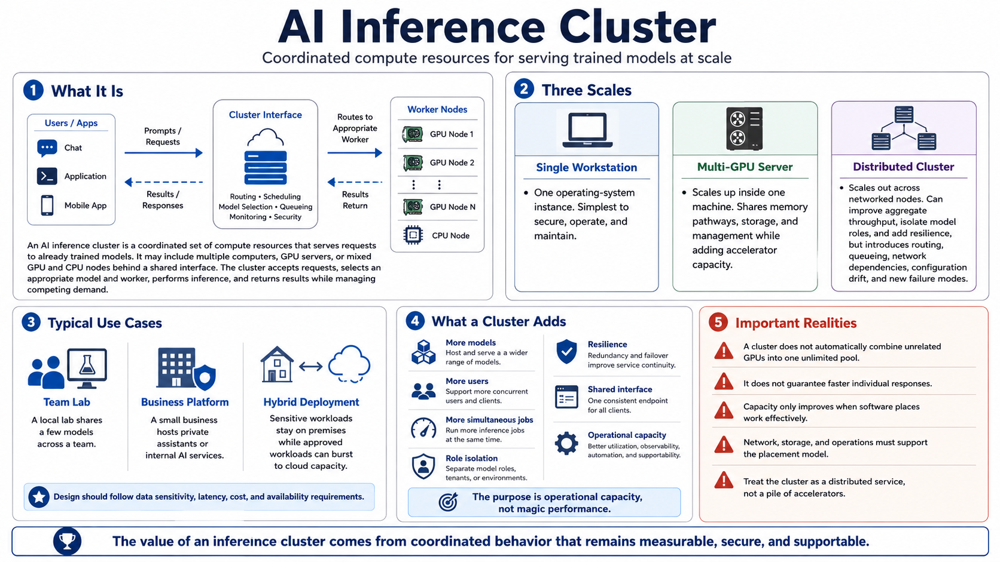

What Is an AI Inference Cluster?
Connecting to LMS... Progress: in progress

Narration
An AI inference cluster is a coordinated set of compute resources that serves requests to already trained models. Those resources may be several computers, several GPU servers, or a mix of GPU and CPU nodes behind a shared interface. The cluster accepts prompts or other inputs, selects an appropriate model and worker, performs inference, and returns results while managing competing demand. Its purpose is operational capacity: supporting more models, users, or simultaneous jobs than one serving process can handle reliably.
It helps to distinguish three scales. A single workstation has one operating-system instance and is the simplest system to secure and maintain. A multi-GPU server scales up inside one machine, sharing memory pathways, storage, and management while gaining additional accelerator capacity. A distributed cluster scales out across networked nodes. Scaling out can increase aggregate throughput, isolate model roles, and add resilience, but it introduces routing, queueing, network dependencies, configuration drift, and failure modes that do not exist on one host.
Use cases range from a local lab that shares a few models across a team, to a small business hosting private assistants, to an enterprise platform serving many applications. Hybrid designs can keep sensitive inference on premises while bursting approved workloads to cloud capacity. The design should follow data sensitivity, latency, cost, and availability requirements rather than a desire to imitate the largest deployment.
A cluster does not combine unrelated GPUs into one unlimited pool automatically, and it does not guarantee faster individual responses. It adds capacity only when software can place work effectively and the network, storage, and operations model support that placement. Treat the cluster as a distributed service, not a pile of accelerators. Its value comes from coordinated behavior that remains measurable, secure, and supportable.